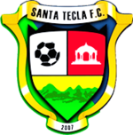

Santa tecla Fc
La institución surgió en el año 2007 de una iniciativa conjunta del alcalde de la ciudad de Santa Tecla, Óscar Ortiz y empresarios de la localidad, que compraron la categoría de la Liga de Ascenso al Club Deportivo Telecom.1El Torneo Apertura 2007 fue su primera temporada y alcanzó el quinto lugar. En los campeonatos siguientes disputó tres semifinales de la liga en los torneos Clausura 2008, Apertura 2008, y Apertura 2009.
